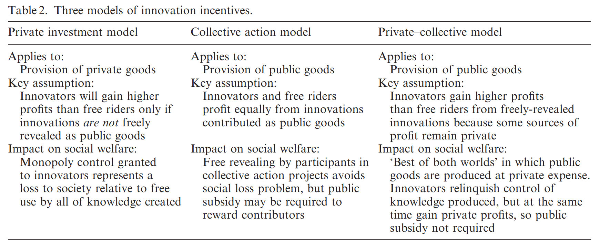

Review - Free Revealing and the Private-Collective Model for Innovation Incentives
Hippel, Eric von, and Georg von Krogh. “Free Revealing and the Private-Collective Model for Innovation Incentives.” R and D Management 36, no. 3 (June 2006): 295–306. https://doi.org/10.1111/j.1467-9310.2006.00435.x
Abstract:
A central tenant of open innovation is free revealing of the detailed workings of novel products and services, so that others may use them, learn from them, and perhaps improve them as well. We explain that innovators frequently do freely reveal proprietary information and knowledge regarding both information-based products and physical products they have developed. We explain why free revealing can make good economic sense for innovators and for society as well. The article develops the case for free revealing in terms of a ‘private collective’ model of innovation incentives.
Main Arguments:
Collective inventions (Allen, 1983) provide early evidences of free revealing in 19th century English Iron Industry and Mine Engine design (Nuvolari, 2004) in physical products. Free revealing is wide-spread in other industrial, medical, sports equipment products, while open source software depends on free revealing of the source code to exist, sometimes this kind of intentional and routine irrational behaviors even take place regardless of the competing relationship among the profit-seeking firms.
Some practical cases could be made to explain the free revealing for innovation:
-
When others know something close to ‘your’ secret, it’s very possible that many firms and individuals may have similar information (inevitable innovations), cost to maintain your trade secret could become too high to be practical.
-
When profits from patenting are low, i.e. weak appropriability to profit directly from the temporary monopoly granted from patent (Teece, 2003).
-
When incentives for free revealing are positive:
-
Free revealing help to create awareness about the innovation (increased adoption, network effect)
-
increase the rate of collective learning, rapid development of better design (quickly become dominant design to preempt competitions)
-
It’s hard to control the knowledge, given free-flowing of engineers and supply chain cooperation
-
Reputation gained from free-revealing, increased value and potential profit from related complementary assets
-
Sharing enable manufacturers and users community collectively improve the innovation both up and down stream, ultimately helps everybody.
-
Given the observation, a private-collective model of innovation incentive is proposed to account for the limit in Private Investment and Collective Action model dichotomy.

Key Assumption:
Innovators gain more profits than free riders from freely-revealed innovations because some sources of profit remain private.
- Participation in the community brings intrinsic private benefits, such as learning, enjoyment and sense of ownership
Adopting the private-collective model will bring the “best of both worlds” in which public goods are produced at private expense. Innovators relinquish control of knowledge produced, but at the same time gain private profits, so public subsidy is not required.
Questions
-
The distinction between collective action model and private-collective model is the assumption that innovators profit more than free-rider, since the intrinsic rewards also exist in collective action model, can we measure the specific additional extrinsic private profit?
-
The happy middle ground that offer society “the best of the both worlds” seems too good to be obtained without any cost/efforts, what’s the catch? When will it fail?
-
David Teece (1986) introduced the decision tree model for integration vs. contract for profiting from innovation, given the conditions of complementary assets and appropriability regime. What are firm’s best strategy to profit from open user innovation? When to free reveal as a strategy/weapon?
Google does OSS right. Open source to commoditize your competitor's advantages, not to strengthen your own. [By anonymous]
References
Allen, R.C. (1983) Collective invention. Journal of Economic Behavior and Organization, 4, 1, 1–24.
Nuvolari, A. (2004) Collective invention during the British industrial revolution: the case of the Cornish pumping engine. Cambridge Journal of Economics, 28, 3, 99–119.
Teece, David. “Profiting from Technological Innovation: Implications for Integration, Collaboration, Licensing and Public Policy.” Research Papers in Economics, 2003, pp. 11–46.